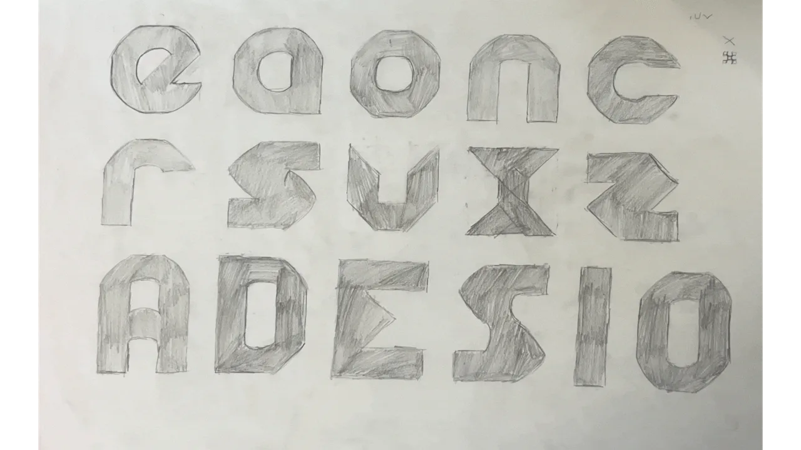
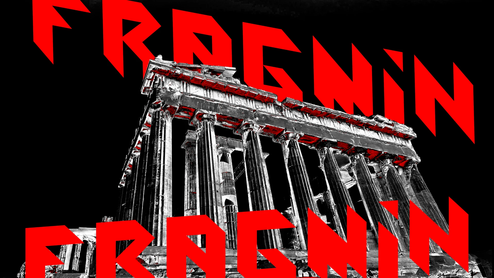
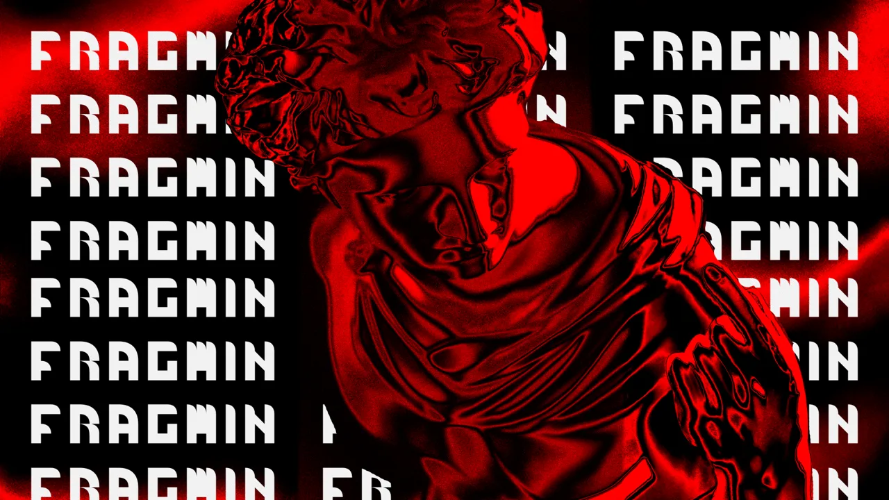
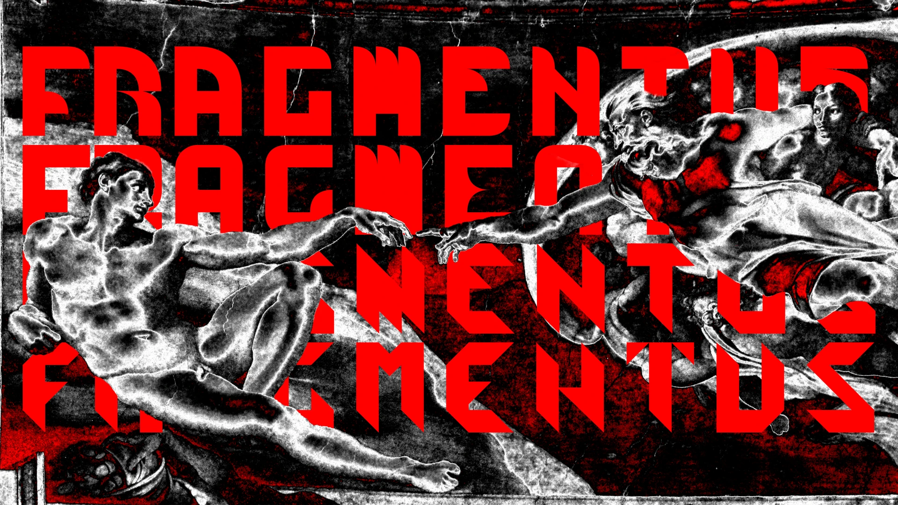
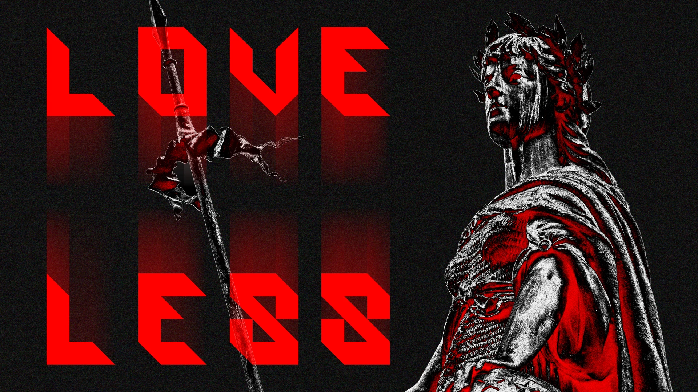
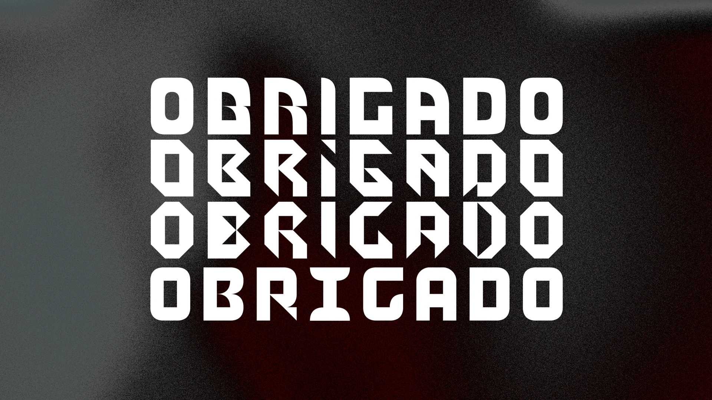

Fragmin
Fragmin nasceu de um exercício de criação de uma tipografia variável construída a partir de um único grid. O ponto de partida foi a fragmentação, conceito que também dá origem ao nome do projeto: diferentes partes que, mesmo opostas, encontram uma maneira de se conectar e formar um sistema visual harmônico.
A estética foi inspirada em uma ideia de passado futurista, combinando estruturas geométricas, formas modulares e uma atmosfera experimental. Cada caractere foi desenvolvido a partir de fragmentos que podem se reorganizar, criando diferentes possibilidades dentro de uma mesma estrutura.
O projeto foi desenvolvido em grupo, com o desafio de fazer com que todas as versões da tipografia partissem do mesmo grid e fossem capazes de se relacionar entre si. A partir desse sistema, exploramos a interpolação entre as formas, permitindo que os fragmentos se transformassem de maneira fluida e contínua.
Assim, Fragmin não funciona apenas como uma tipografia com diferentes versões, mas como um sistema em constante transformação. Entre uma forma e outra, surgem novas combinações, novos caracteres e novas possibilidades visuais.
O resultado é uma tipografia variável experimental que transforma a própria construção das letras em parte da experiência — fragmentos que se unem, se desfazem e se transformam continuamente.











